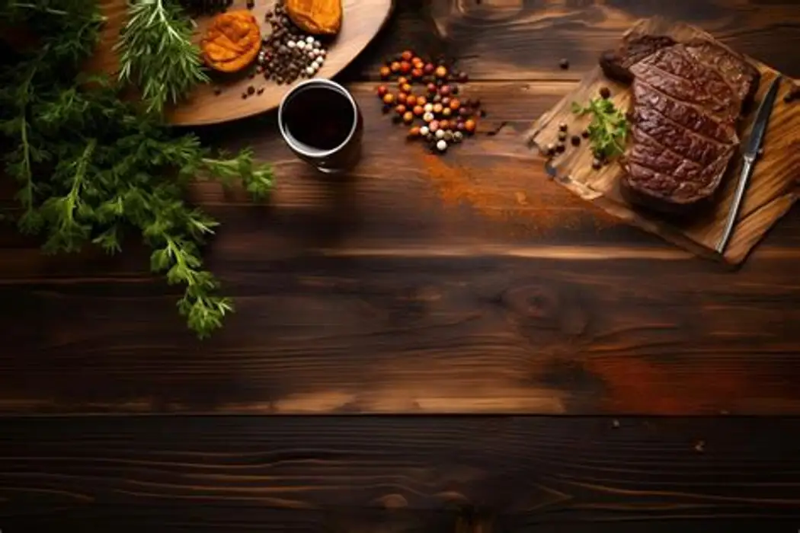

Local at heart
We source thoughtfully and let Cameroon’s ingredients lead the way.
Camus Restau is a neighborhood kitchen in Yaoundé serving generous food, warm hospitality, and the flavors that bring people home.

We started Camus to create a place where traditional recipes and contemporary cooking can share the same table. Our menu celebrates local produce, patient cooking, and the joy of eating together.
From a quick lunch to a family celebration, every plate leaves our kitchen with care.
Explore Our MenuWe source thoughtfully and let Cameroon’s ingredients lead the way.
Good service means noticing the little details and making room for everyone.
Our food is designed for conversation, connection, and another helping.